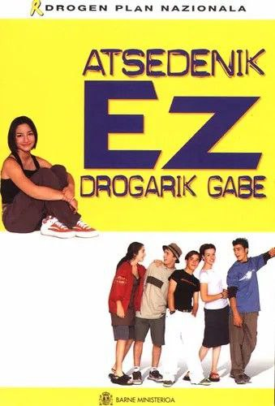

13 Lapsusak, huts egiteak eta erroreak
📔
Baliabideak: (Bleichenbacher et al., 2019; Corder, 1975; Corder, 1981; Esnal, 1988; Larrea, 2008, 2009; Oñederra et al., 2015; Selinker, 1972, 1996; Torijano, 2004) * **
Hizkuntz erroreen aurrean irakaskuntzak hainbat jarrera hartu ditu. Erabat baztertu beharreko ezaugarritzat hartzetik gaur eguneko jarrera analitikoetara.
Ikasleak hizkuntza-ikasle diren neurrian, hizkuntza hutsegitez ederto jantziak izango dira haien ekoizpen linguistiko asko eta asko. Horiek aztertzeko markoa gai honetan eraikitzen ahaleginduko gara.
Hizkuntza ikaskuntzaren testuinguruan, erroreak ez dira soilik ezagutza formalaren nork beretzat egitearen emaitza, baizik eta, askotan, benetako baldintzetan aritzeko abileziaren adierazle gisa ulertzen dira. Hizkuntza trebetasuna, beste norbaitek baino hobeto aritzen denari arretaz behatuz hobetzen da, eta horrek hizkuntza ikaskuntzan erroreen zeregina berrikusteko beharra azpimarratzen du. Historikoki, hizkuntza irakaskuntzaren planteamendu behavioristek ikusi-ahala-menderatu printzipioa erabili zuten; horretan errorea porrotzat hartzen zen; hartara, sentimendu negatiboak sortzen zituen ikasle zein irakasleen artean. Ellis-ek adierazten du errorea eta zuzenketa hutsegite moral gisa ikusi daitezkeela, ikasleen jarrera pasiboa eta arriskurik ez hartzekoa eraginez.Azken urteetan erroreen inguruko ikuspegia aldatu egin da.
Ikasleak bigarren hizkuntzan egiten dituzten erroreak, orain, hizkuntza eskuratzen ari diren seinaletzat hartzen dira, ez ikaskuntza ezaren adierazletzat. Beraz, erroreak ikaskuntza prozesuaren beharrezko parte gisa eta baliagarri gisa ikusten dira. Horrek planteamendu berria eragin du, horretan erroreak ulertzen dira ikasleentzat hipotesiak egokitzeko aukera moduan eta birformulatzeko informazio-iturri gisa balioesten dira. Horrek ikaslearen ziurtasuna eta performantzia arrakastatsuaren ekarpena balioztatzen du, eta aldi berean, irakasleak emandako feedback egokiaren bidez performantzia ez-arrakastatsuaren balioa ere aitortzen du.
13.1 Historia
Hasierako ikuskera Analisi Kontrastiboaren lehenengo ikuskerak eraiki zuen.
13.1.1 Analisi Kontrastiboa
Analisi Kontrastiboak (AK) Lado (1957) aldarrikatzen zuen jatorrizko hizkuntza eta helburu hizkuntzen arteko alderaketa sistematikoa eraiki behar zela. Horretara, eskuratu beharreko ohituretarako bidea ezarri zitekeen.
Hizkuntzaren ikaskuntzaren definizioak artean behaviorismoak ezartzen zituen. Oinarri-oinarrian hizkuntza beste ohitura bat zitekeen.
Ikastunaren H1 eta helburu hizkuntzen arteko hizkuntz-aldeak azal zitzakeen hizkuntzen ikaskuntzen zailtasunak.
Transferentzia/interferentzia ere aipatu zen Analisi Kontrastiboen sasoian. H1 eta H2en arteko portaera linguistikoak aipatzeko. Transferentzia zatekeen, hizkuntza biak antzerakoak izaki, H1eko eraginak H2a eraikitzen laguntzea; bestela, berriz, interferentzia zatekeen H2an H1eko egiturak erabiltzea, H2ko ereduen kontra.
Analisi Kontrastiboaren (AK) kritikek, 50. eta 60. hamarkadetan ospe handia izan arren, hainbat arazo egotzi zaizkio. Lehenik eta behin, AKak jatorrizko ustea zen errore guztiak H1en interferentzietatik eratorriak zirela, baina ikerketek frogatu dute hori ez dela beti egia. Dulay-k eta Burt-ek azaldu zuten erroreen %85 garapen-erroreak zirela, eta %3 soilik guraso-hizkuntzaren ondoriozkoak. Gainera, AKak ezin ditu aurreikusi ezin diren erroreak, ezta intralingualak edo estrategiaren ondoriozkoak ere. Bigarrenik, AKaren praktikotasun eta fidagarritasuna zalantzan jarri dira, bere ikerketa-metodoak eta teoria inkoherentziak direla eta. Hainbat ikerketak erakutsi dute AKak eskaintzen duena mugatua dela, hizkuntza irakasleei euren esperientziak baino ez baitiezkie gehiago irakasten. 70eko hamarkadaren amaieran, Erroreen Analisia hasi zen gailentzen, AKaren oinordeko gisa, hizkuntza ikaskuntzaren prozesua ikasle-zentratuagoa bihurtuz eta erroreei balio positiboa emanez.
13.1.2 Erroreen Analisia
Corderren 1969ko lanak, “The Significance of Learner’s Errors”, Erroreen Analisi (EA) diziplina berria ezarri zuen, Analisi Kontrastiboaren alternatiba gisa sortua. EAk tarteko hizkera eta bigarren hizkuntzaren ikaskuntza uztartzen ditu, erroreak ulertzeko eta aztertzeko modu berri bat eskainiz. Europan, hainbat ikerketa burutu ziren EAren aplikazioetan, hizkuntzaren jabekuntza-prozesuaren ikuspegitik. EAk ez du antzik Analisi Kontrastiboarekin; izan ere, EAk xede-hizkuntzaren ekoizpen errealak hartzen ditu oinarritzat, erroreak beren testuinguruan identifikatu, sailkatu, deskribatu eta jatorria aztertzeko. Metodoak erroreen larritasuna balioztatzen du eta lanketa posibleak proposatu ere bai.
Corderrek erroreen analisiaren ikuspegia aldatu zuen, haur baten lehenengo hizkuntza ikastearen eta heldu baten bigarren hizkuntza ikastearen arteko paralelismoak erakutsiz. Fernandezek adierazi zuen, hizkuntzaren jabekuntza-prozesuan, ikasleak aldi ezegonkorren bidez igarotzen direla, eta erroreak arauak bereganatzearen adierazle direla. Gaur egun, esperientziadun irakasleek erroreak gaitasun linguistikoaren lortzeko estrategia gisa ikusten dituzte. EAk erroreen izaera ezagutzeko balio du, baina ez azaltzeko ikasleek zergatik egiten dituzten erroreak. Gainera, Erroreen Analisiak komunikazioa desitxuratzea sortzen dutenak ikertzen ditu, baina objektibitatea mantentzea garrantzitsua da erroreen larritasuna balioesteko. Corderrek erroreen eta hutsegiteen arteko bereizketa egiten du, erroreen analisiak ikaslearen gaitasun globala neurtzeko balio duelarik, gaitasun gramatikalaz gain. Azkenik, EAren eta Analisi Kontrastiboaren arteko analisi osagarriak erroreen naturaltasunaren eta bigarren hizkuntzaren jabekuntzaren ikuspegi osatuagoa eskaintzen du, H1aren eta beste arrazoi batzuen eragina ere aztertuta.
13.1.3 Tarteko Hizkuntza
Tarteko hizkuntza, Selinker-ek 1969an eta 1974an “Language Transfer” argitalpenean proposatutako terminoa, Corderrek lehen aldiz “aldi baterako gaitasuna” deituriko kontzeptu baten adierazpena da. Ikasleak bigarren hizkuntza ikasten ari direnean sortzen den kode linguistiko aldakorra da, xede-hizkuntzan erabateko gaitasuna lortu arte etengabe eboluzionatzen duena. Tarteko hizkuntza, ikaslearen ikasprozesuaren baitan garatzen da, eta zuzenak zein erroredunak diren bere ezaugarriak aztertzen ditu. Ikaslearen ikasprozesuan erabilitako estrategiak eta ikasle bakoitzaren uneko sistema linguistikoaren ezaugarriak aztertzeko tresna gisa erabiltzen da, ikasle bakoitzak meta-hizkuntza bereganatzean jarraitzen duen prozesuaren azterketa zehatza eskainiz.
Tarteko Hizkuntzak baditu berezko ezaugarri batzuk Helburu Hizkuntzarekiko alderakuntzan:
- Sinpletasuna
Tarteko hizkuntza sistema, xede-hizkuntzarenarekin alderatuta, sinpleagoa da morfosintaktikoki eta pragmatikoki, baita lexikoaren zehaztasun eta ugaritasunari dagokionez ere. Ikasleek hizkuntza sistema modu sinplifikatuan, laburtuan eta murriztuan erabiltzen dute, komunikazioa bideratzeko eta hizkuntzari buruzko beren hipotesiak forma errazetara mugatuz. - Sistematikoa
Tarteko Hizkuntza linguistikoki berezko sistema bat osatzen du, Xede-Hizkuntzaren arauetatik bereiziak diren bere arauekin. Ikasleek Tarteko Tizkuntza sistematikoa sortzen dute, hau da, haurrak lehen hizkuntza ikasten ari direnean egiten dituzten errore sistematikoen antzekoak egiten dituzte, baita lehen hizkuntzan oinarritutako erroreak ere. Ikaslearen ama-hizkuntzaren rola tarteko hizkuntzan ikerketa-arlo eztabaidagarrienetako bat da. - Dinamikoa
Ikas-prozesuan aurrera egin ahala eta ikasleak arau berriak, hitz berriak eta abar eskuratzen dituen heinean, Tarteko Hizkuntzaren sistema aldatzen joaten da. Hau da, ikas-prozesuaren maila bakoitzak bere tarteko hizkuntza propioa du, eta guztien artean tarteko hizkuntzen continuum bat osatzen dute. - Fosilizazioa
Tarteko Hizkuntza fosildu egin daiteke, hau da, ikasleek aipatutako continuum horretan geldialdiak izan ditzakete, xede-hizkuntzara iristeko oztopoak sortuta. - Aldakortasuna
Ikasleek beren baliabide linguistikoak egoera eta modu desberdinetan erabiltzen dituzte. Ataza-motak, solaskideak eta egoerek ikaslearen ekoizpenaren zuzentasun-maila baldintza dezakete. Aldi berean, araua ikasi arren, ikasleak arau hori behar bezala bereganatu ez badu, hutsuneak izango ditu bere ekoizpenetan.
13.1.4 Erroreen erabilera ikaskuntza prozesuan
Bigarren Hizkuntza ikastearen baitan, erroreak funtsezko elementuak dira, ikas-prozesuaren parte gisa ulertuta. Corderrek (1967) akatsak hiru kategoriatan banatzen ditu:
Errore sistematikoak (ikasleek ezjakintasunez errepikatzen dituzten egitura okerrak),
Huts egiteak (arau zuzena ezagutuz gertatzen diren akatsak),
Lapsusak (arrazoi ez-linguistikoengatik gertatzen diren hutsak).
Euskal Herrian, IXA taldeak erroreak eta desbideratzeak bereizten ditu, lehena gramatika-arauen urraketen gisa eta bigarrena testuinguru jakin batean egokiak ez diren egiturak.
Erroreen analisiaren garrantzia hiru esparrutan banatu ohi da:
Irakasleentzat:
Erroreetatik etekin positiboak atera ditzakete, ikasleen ahulguneak ezagututa eta irakaskuntza estrategiak hobetzeko.Hizkuntza bereganatzen ari denaren ikuspuntutik:
Erroreak ikasleak meta-hizkuntza ikasteko erabiltzen dituzten estrategien adierazgarri diraEta hizkuntza-ikasleen ikasprozesuaren tresna gisa
Erroreak ikasprozesuko tresna garrantzitsuak dira, hizkuntzaren zein atal zehatzetan arreta jarri behar duten adieraziz.
Erroreen analisirako prozedurak bi ikuspegi nagusitan banatzen dira
Gass eta Selinkerren arabera, hurrengo prozedura jarraitu behar da
corpus-bilketa,
erroreen identifikazioa,
erroreen sailkapena,
erroreen zenbatekotasuna identifikatu,
erroreen jatorria arakatu, eta
konponbide posibleak proposatu.
Corderrek, aldiz, proposatzen du:
corpus-bilketa,
erroreen identifikazioa,
erroreen deskribapena,
erroreen azalpena, eta
erroreen ebaluazioa.
Den horrek ikasleen hizkuntza eskuratze prozesua hobeto ulertzeko eta ikaskuntza hobetzeko tresna gisa balio behar du.
13.2 Erroreen iturria(k)
13.2.1 Transferentzia

13.2.2 Gainjeneralizazioa
13.2.3 Sinplifikatzea
13.2.4 Irakaskuntzaren eragina
13.3 Erroreen larritasuna
13.4 Irakaslea eta erroreak
Irakasleak ikaslearen erroreen aurrean ematen duen feedbacka, ikasleari bere jokabidearen egokitzapenak egiteko beharrezko informazioa da. Feedbacka positiboa zein negatiboa izan liteke. Ikerketek erakutsi dutenez feedback positiboa eraginkorragoa da ikasleen jokabidea aldatzeko orduan. Feedbackak ez ditu bakarrik ikasleak egindako akatsak zuzentzen, baizik eta motibazioa eta ziurtasuna ere areagotu litzake. Irakasleek ez lukete zuzenketak zigor moduan sekula erabili beharko, horrek urduritasuna sortzen baitu ikasleen artean. Errorea porrotaren seinale gisa hartzea saihestu behar da.
Ikasleek erroreak egiten dituztenean, irakasleak hainbat erabaki hartu behar ditu: errorea zuzendu, gerorako utzi ala oharkabean pasatu. Hori guztiori ikaslearen egoeraren arabera eta erroreak duten garrantziaren arabera erabaki behar da. Ahozko erroreen zuzenketa, bereziki, prozesu konplexua da; irakasleak lehenik errorea identifikatu, gero erabaki behar du zuzendu ala ez, eta azkenik, nola zuzendu. Ikasleek zuzenketak espero ditzakete, baina irakasleak kontuz ibili behar du erantzunak ematean, ikaslearen autoestimua eta ikaskuntza prozesua kaltetu gabe.
Hutsegiteak ikaskuntza prozesuaren parte naturala dira eta irakasleek hori ulertu behar dute. Erroreen aurrean jarrera egokia izatea funtsezkoa da ikasgelan eraginkortasun pedagogikoa lortzeko. Azken finean, irakasleak hizkuntza akastun hori epe luzera begira hizkuntza gaitasunez erabiltzeko bide gisa ikusi behar du, akatsak esperimentu sortzaileak (ere ba)dira-eta.
13.4.1 Zenbait teknika
Irakasleek erroreak zuzentzeko zenbait teknika erabil ditzakete, Grymonprezek eta beste adituek proposatutako irizpideak jarraituz, hala nola ikaslearen autonomia garatzea, ikasleei pertsonalizatutako irtenbideak eskaintzea, eguneroko jardueretan txertatzea eta errore berari egoera ezberdinetan aurre egitea. Teknika horien artean, portfolioen erabilera, lexiko berriaren bilketa, web-blogen sortzea, “Eguneko errorea” lantzea, ikasleen arteko idazlanen trukaketa, klasean zuzenketak egitea, talde-lanak, ahozkotasuna lantzeko grabazioak, hutsegiteen artxiboa, idazkera eredugarrien bilduma, testuen itzulpena eta beridazketa, eta ikasleen elkarrizketak aipatzen dira. Garrantzitsua da teknika hauek ikasgelan modu egokian aplikatzea, ikasleen hizkuntza gaitasuna hobetzea xede dutelarik.
| Teknika | Azalpen Laburra |
|---|---|
| Portfolioa | Ikasleen lanak bildu eta berrikusteko. |
| Lexiko Berriaren Egunkaria | Hitz berriak eta gakoak jasotzeko. |
| Interneteko Baliabideak | Feedbacka eskatzen duten baliabideak erabiltzea. |
| Web-Bloga | Ikaskideen arteko lanketa, idazlanak eta eztabaidak. |
| “Eguneko Errorea” | Ohiko akatsen azterketa eta konponbideen bilaketa. |
| Zantzuak Ematea | Ikasleek zuzenketa egokia aurkitu arte. |
| Idazlanen Trukaketa | Ikaskideen lanak ezagutzeko. |
| Zuzenketen Trukaketa | Batak besteari zuzendu. |
| Klaseko Zuzenketa | Pantailan idazlanak proiektatu eta elkarrekin zuzendu. |
| Talde-lana | Talde txikietan idazlanak egin. |
| Grabazioak | Ahozkotasuna lantzeko. |
| Hutsegiteen Artxiboa | Erroreen sailkapena eta konponketak. |
| Idazkera Ereduen Artxiboa | Idazkera eredugarrien bilduma. |
| Ikasleen Berregitea | Irakasleak zuzendutako testua ikasleek berregin. |
| Negoziazioa | Zer eta nola zuzendu erabakitzea. |
| Kontrol Zerrendak | Urratsez urrats lanak egitea eta berrikustea. |
| Testuen Itzulpena | Testuak hizkuntza bitan itzultzeko. |
| Testuen Berridazketa | Testuak modu ezberdinez berridaztea. |
| Idazketa Tailerra | Lan-taldeak hizkuntza lantzeko. |
| Elkarrizketak | Ikasleekiko elkarrizketak egin. |
13.4.2 Zenbait iradokizun
| Puntu/Iradokizuna | Laburpena |
|---|---|
| Huts-egiteak eta erroreak bereiztea | Ikasleek hutsegiteak beren kabuz zuzen ditzakete; erroreak beste baten laguntzarekin egin behar dute. |
| Erroreen balioa eta larritasunaz | Erroreen eta hutsegiteen balioa eta larritasuna testuaren testuinguruan ulertzen da, ez esaldi solteetan. |
| Irakasleen arduraz hizkuntzaren erabileran | Hizkuntzaren erabilera zuzen eta egokia irakasle guztien ardura da. |
| Irakasgaiaren hobekuntza hizkuntzaren bidez | Hizkuntzaren erabilera zuzen eta egokia irakasgaiak hobetzeko eta lantzeko txertatu behar da. |
| Hizkuntza akatsak saihestzeaz | Hizkuntza akatsei aurrea hartzeak ez du esan nahi akatsak erabat saihestuko direnik. |
| Ikerlan eta sailkapenez | Testu barruko hizkuntza erroreak ere aztertu, sailkatu eta hobetzeko proposamenak egin behar dira. |
| Erroreen zuzenketen metodologiez | Erroreen zuzenketak lantzeko metodologia, teknika eta prozedurak garatu behar dira. |
| Erroreen tratamenduaz | Errorea erakustea beharrezkoa bada ere, horretaz ohar dadin prozedura bat eskaini behar zaio. |
| Jarraibideen diseinuaz | Irakasleek ikasgaiaren eta taldearen ezaugarrien arabera erroreak tratatzeko jarraibideak diseinatu behar dituzte. |